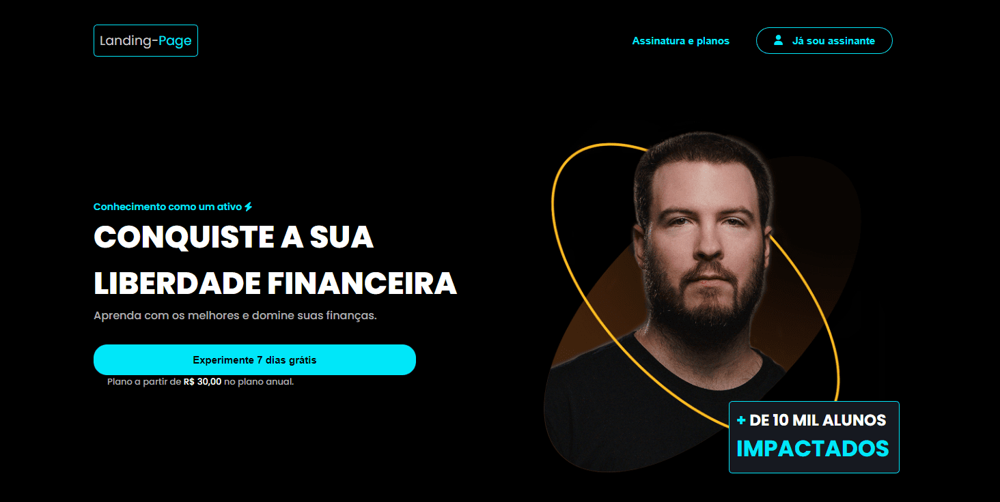
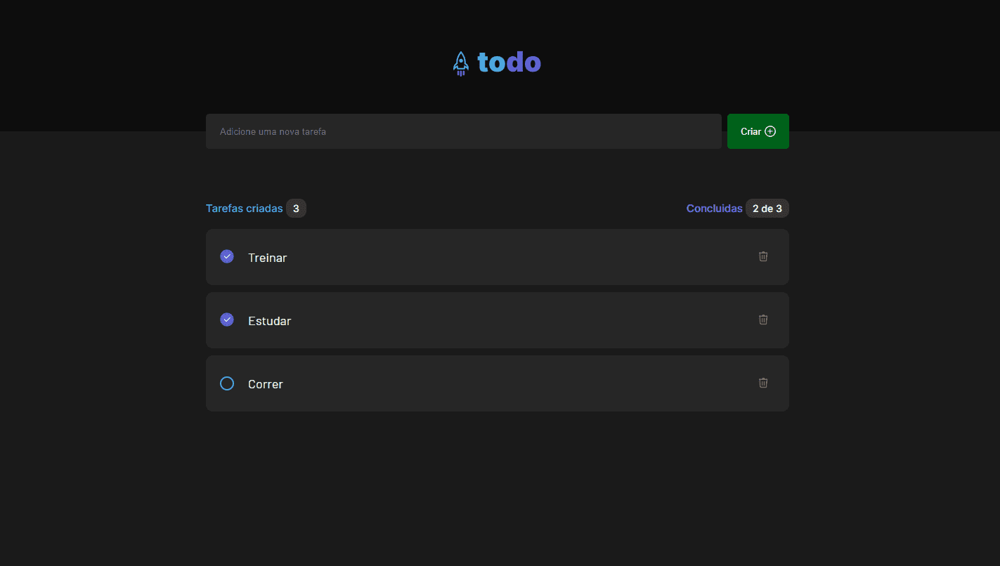
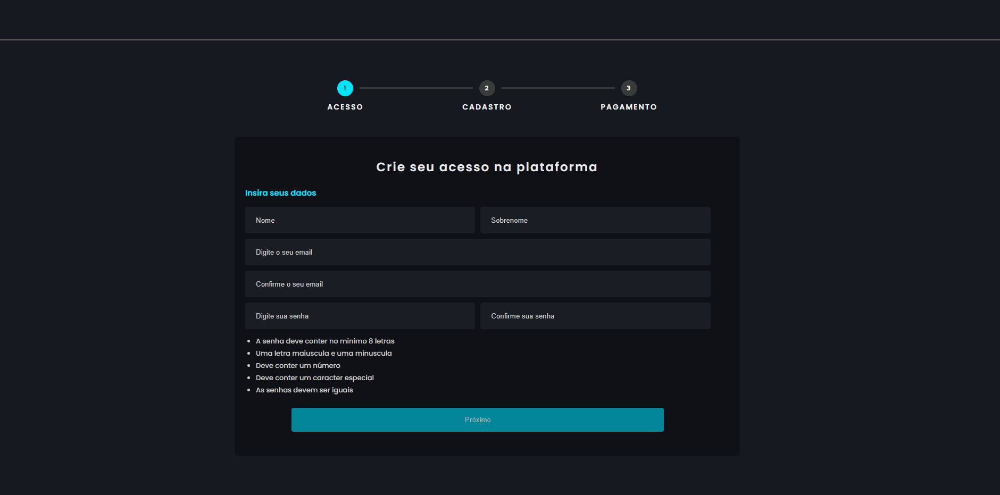

Analista de Dados
sobre mim:
Olá, meu nome é Hebert e trabalho remotamente como cientista de dados freelancer. Sou graduado em Matemática (UFMG) pós graduado em Matemática Financeira e Estatística.
Desde criança, sempre gostei de números e planilhas e aprendi a enxergar o mundos como uma grande coleção de dados quantitativos e qualitativos. Estou sempre procurando padrões nesses dados para decifrar o que eles dizem.
Vamos trabalhar juntos? Entre em contato comigo por alguma das minhas redes.
Alguns projetos do meu Portfolio

Landing-page

To-Do List
